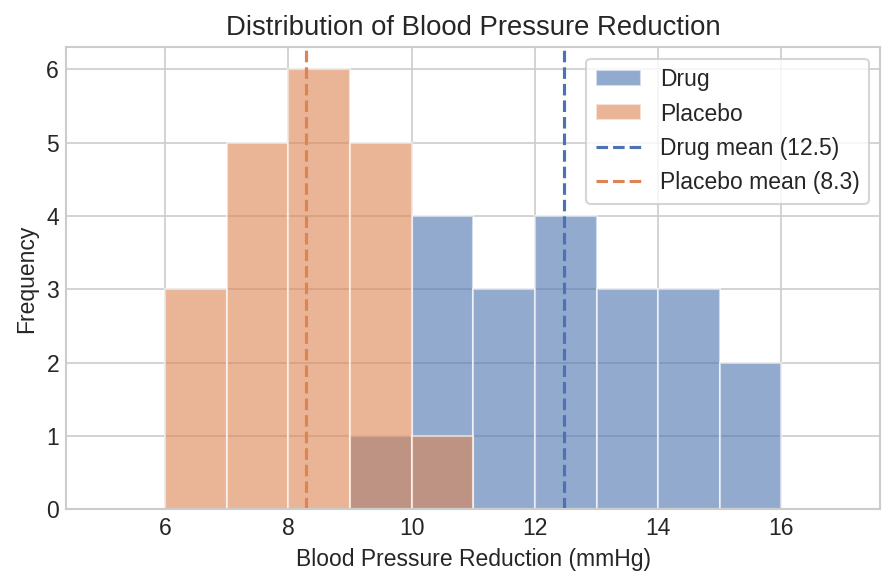
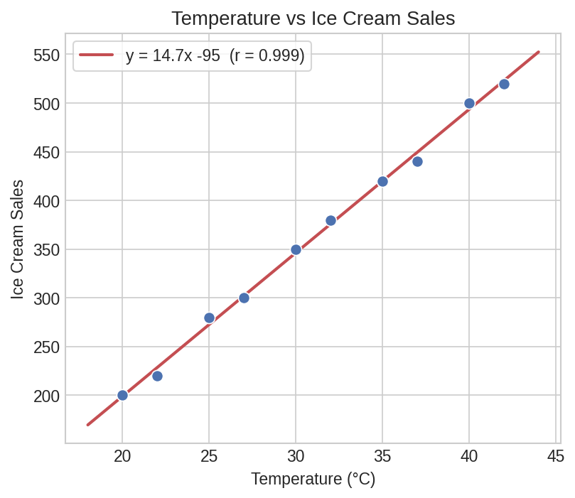
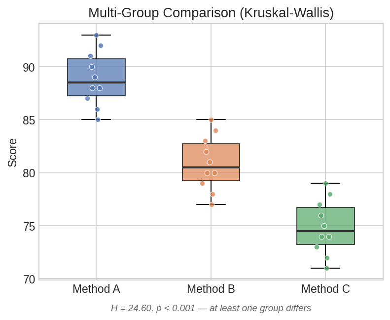

Hypothesis Testing Workflow¶
A complete workflow for comparing two groups: check assumptions, choose the right test, extract and interpret results — all using Polars expressions.
Setup¶
import polars as pl
import polars_statistics as ps
# Clinical trial data: blood pressure reduction (mmHg) in two groups
df = pl.DataFrame({
"drug": [12.3, 10.1, 14.5, 11.8, 13.2, 9.7, 15.1, 12.8, 10.5, 14.0,
11.2, 13.9, 10.8, 12.6, 14.3, 11.5, 13.7, 10.2, 12.1, 15.0],
"placebo": [8.1, 7.5, 9.2, 6.8, 10.1, 7.9, 8.5, 9.8, 7.2, 8.7,
9.5, 6.5, 8.3, 7.1, 9.9, 8.0, 7.6, 9.3, 6.9, 8.8],
})
Step 1: Check Normality¶
Before choosing a parametric test, check whether each group is approximately normal:
normality = df.select(
ps.shapiro_wilk("drug").alias("drug_normality"),
ps.shapiro_wilk("placebo").alias("placebo_normality"),
)
drug_sw = normality["drug_normality"][0]
placebo_sw = normality["placebo_normality"][0]
print(f"Drug: W={drug_sw['statistic']:.4f}, p={drug_sw['p_value']:.4f}")
print(f"Placebo: W={placebo_sw['statistic']:.4f}, p={placebo_sw['p_value']:.4f}")
# p > 0.05 → no evidence against normality → parametric test is appropriate
Expected output:

Plot code
import matplotlib.pyplot as plt
import numpy as np
fig, ax = plt.subplots(figsize=(7, 4))
bins = np.linspace(5, 17, 13)
ax.hist(df["drug"].to_list(), bins=bins, alpha=0.6, label="Drug", color="#4C72B0")
ax.hist(df["placebo"].to_list(), bins=bins, alpha=0.6, label="Placebo", color="#DD8452")
ax.axvline(df["drug"].mean(), color="#4C72B0", ls="--", lw=1.5)
ax.axvline(df["placebo"].mean(), color="#DD8452", ls="--", lw=1.5)
ax.set_xlabel("Blood Pressure Reduction (mmHg)")
ax.set_ylabel("Frequency")
ax.legend()
plt.tight_layout()
plt.savefig("hyp_distributions.png", dpi=150)
Alternative: D'Agostino-Pearson Test¶
For larger samples (n ≥ 20), the D'Agostino-Pearson test combines skewness and kurtosis into a single omnibus statistic:
dag = df.select(
ps.dagostino("drug").alias("drug_dag"),
ps.dagostino("placebo").alias("placebo_dag"),
)
d = dag["drug_dag"][0]
p = dag["placebo_dag"][0]
print(f"Drug: K²={d['statistic']:.4f}, p={d['p_value']:.4f}")
print(f"Placebo: K²={p['statistic']:.4f}, p={p['p_value']:.4f}")
Expected output:
Tip
Shapiro-Wilk is more powerful for small samples (n < 50). D'Agostino-Pearson works better for larger samples and tells you why normality fails (skewness vs kurtosis).
Step 2: Check Variance Equality¶
The Brown-Forsythe test checks whether the two groups have equal variances:
var_test = df.select(
ps.brown_forsythe("drug", "placebo").alias("bf")
)
bf = var_test["bf"][0]
print(f"Brown-Forsythe: F={bf['statistic']:.4f}, p={bf['p_value']:.4f}")
# p > 0.05 → variances are roughly equal
Expected output:
Step 3: Run the Right Test¶
Based on the assumption checks, pick the appropriate test:
result = df.select(
# Parametric (if both groups are normal)
ps.ttest_ind("drug", "placebo").alias("ttest"),
# Non-parametric alternative (if normality fails)
ps.mann_whitney_u("drug", "placebo").alias("mann_whitney"),
# Robust alternative (handles outliers via trimmed means)
ps.yuen_test("drug", "placebo", trim=0.2).alias("yuen"),
)
ttest = result["ttest"][0]
mwu = result["mann_whitney"][0]
yuen = result["yuen"][0]
print(f"t-test: t={ttest['statistic']:.4f}, p={ttest['p_value']:.6f}")
print(f"Mann-Whitney: U={mwu['statistic']:.4f}, p={mwu['p_value']:.6f}")
print(f"Yuen: t={yuen['statistic']:.4f}, p={yuen['p_value']:.6f}")
Expected output:
Step 4: One-Sided Tests¶
If you have a directional hypothesis (e.g., "drug is better than placebo"):
one_sided = df.select(
ps.ttest_ind("drug", "placebo", alternative="greater").alias("ttest"),
)
t = one_sided["ttest"][0]
print(f"One-sided t-test: t={t['statistic']:.4f}, p={t['p_value']:.6f}")
Expected output:
Step 5: Collect Everything into a Summary Table¶
Run all tests at once and build a comparison DataFrame:
tests = df.select(
ps.ttest_ind("drug", "placebo").alias("ttest"),
ps.mann_whitney_u("drug", "placebo").alias("mwu"),
ps.yuen_test("drug", "placebo", trim=0.2).alias("yuen"),
ps.brunner_munzel("drug", "placebo").alias("bm"),
)
summary = pl.DataFrame({
"test": ["t-test (Welch)", "Mann-Whitney U", "Yuen (trim=0.2)", "Brunner-Munzel"],
"statistic": [
tests["ttest"][0]["statistic"],
tests["mwu"][0]["statistic"],
tests["yuen"][0]["statistic"],
tests["bm"][0]["statistic"],
],
"p_value": [
tests["ttest"][0]["p_value"],
tests["mwu"][0]["p_value"],
tests["yuen"][0]["p_value"],
tests["bm"][0]["p_value"],
],
})
print(summary)
# ┌─────────────────┬───────────┬──────────┐
# │ test ┆ statistic ┆ p_value │
# ╞═════════════════╪═══════════╪══════════╡
# │ t-test (Welch) ┆ 9.1739 ┆ 0.000000 │
# │ Mann-Whitney U ┆ 396.5 ┆ 0.000000 │
# │ Yuen (trim=0.2) ┆ 7.1158 ┆ 0.000001 │
# │ Brunner-Munzel ┆ -54.6655 ┆ 0.000000 │
# └─────────────────┴───────────┴──────────┘
Correlation Analysis¶
Measure the strength and significance of associations:
df_cor = pl.DataFrame({
"temperature": [20, 22, 25, 27, 30, 32, 35, 37, 40, 42],
"ice_cream_sales": [200, 220, 280, 300, 350, 380, 420, 440, 500, 520],
"sunscreen_sales": [150, 160, 210, 230, 270, 290, 340, 360, 400, 420],
})
correlations = df_cor.select(
ps.pearson("temperature", "ice_cream_sales").alias("pearson"),
ps.spearman("temperature", "ice_cream_sales").alias("spearman"),
ps.kendall("temperature", "ice_cream_sales", variant="b").alias("kendall"),
)
p = correlations["pearson"][0]
print(f"Pearson: r={p['estimate']:.4f}, p={p['p_value']:.6f}, "
f"95% CI=[{p['ci_lower']:.4f}, {p['ci_upper']:.4f}]")
s = correlations["spearman"][0]
print(f"Spearman: ρ={s['estimate']:.4f}, p={s['p_value']:.6f}")
Expected output:

Plot code
import matplotlib.pyplot as plt
import numpy as np
temp = df_cor["temperature"].to_numpy()
sales = df_cor["ice_cream_sales"].to_numpy()
m, b = np.polyfit(temp, sales, 1)
fig, ax = plt.subplots(figsize=(6, 5))
ax.scatter(temp, sales, s=60, color="#4C72B0", edgecolor="white")
x = np.linspace(18, 44, 100)
ax.plot(x, m * x + b, color="#C44E52", lw=2, label=f"y = {m:.1f}x {b:+.0f}")
ax.set_xlabel("Temperature (°C)")
ax.set_ylabel("Ice Cream Sales")
ax.legend()
plt.tight_layout()
plt.savefig("hyp_correlation.png", dpi=150)
Partial Correlation¶
Control for confounding variables:
# Is temperature → ice cream sales still significant after controlling for sunscreen?
partial = df_cor.select(
ps.partial_cor("temperature", "ice_cream_sales", ["sunscreen_sales"]).alias("partial"),
)
pc = partial["partial"][0]
print(f"Partial correlation: r={pc['estimate']:.4f}, p={pc['p_value']:.6f}")
Expected output:
Multi-Group Comparison¶
Compare three or more groups with a single test:
df_multi = pl.DataFrame({
"method_a": [85, 90, 88, 92, 87, 91, 86, 89, 93, 88],
"method_b": [78, 82, 80, 84, 79, 83, 77, 81, 85, 80],
"method_c": [72, 76, 74, 78, 73, 77, 71, 75, 79, 74],
})
kw = df_multi.select(
ps.kruskal_wallis("method_a", "method_b", "method_c").alias("kw")
)
result = kw["kw"][0]
print(f"Kruskal-Wallis: H={result['statistic']:.4f}, p={result['p_value']:.6f}")
# Significant → at least one group differs. Follow up with pairwise tests.
# Pairwise follow-up
pairs = df_multi.select(
ps.mann_whitney_u("method_a", "method_b").alias("a_vs_b"),
ps.mann_whitney_u("method_a", "method_c").alias("a_vs_c"),
ps.mann_whitney_u("method_b", "method_c").alias("b_vs_c"),
)
for name in ["a_vs_b", "a_vs_c", "b_vs_c"]:
r = pairs[name][0]
print(f" {name}: U={r['statistic']:.1f}, p={r['p_value']:.6f}")
Expected output:
Kruskal-Wallis: H=24.6015, p=0.000005
a_vs_b: U=99.5, p=0.000209
a_vs_c: U=100.0, p=0.000181
b_vs_c: U=95.5, p=0.000654

Plot code
import matplotlib.pyplot as plt
import numpy as np
fig, ax = plt.subplots(figsize=(6, 4.5))
bp = ax.boxplot(
[df_multi["method_a"].to_list(), df_multi["method_b"].to_list(),
df_multi["method_c"].to_list()],
tick_labels=["Method A", "Method B", "Method C"],
patch_artist=True, widths=0.5,
)
for patch, color in zip(bp["boxes"], ["#4C72B0", "#DD8452", "#55A868"]):
patch.set_facecolor(color)
patch.set_alpha(0.7)
ax.set_ylabel("Score")
ax.set_title("Multi-Group Comparison")
plt.tight_layout()
plt.savefig("hyp_boxplot_multigroup.png", dpi=150)